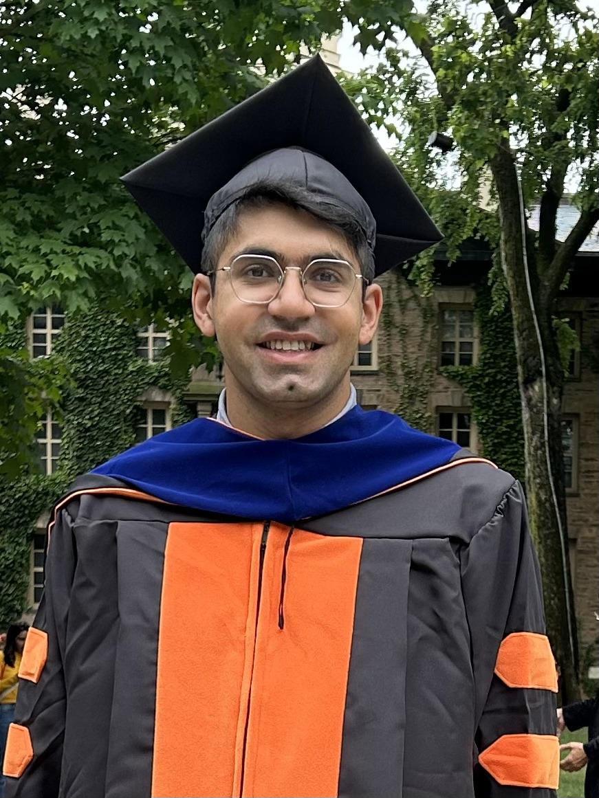

I am an incoming postdoctoral researcher at Microsoft Research NYC. I received my PhD in Electrical and Computer Engineering from Princeton University, advised by Jason D. Lee and Yuxin Chen. During my PhD I spent time at the Flatiron Institute, and my research was supported by the DoD NDSEG Fellowship and the IBM PhD Fellowship. I previously received my B.S. degrees in Math and Computer Science (2020) and my M.Eng degree in EECS (2021) from MIT, where I was advised by Caroline Uhler.
My research is focused on developing the mathematical and scientific foundations of modern AI. I've recently been interested in the following directions:
2026
Sharp Capacity Scaling of Spectral Optimizers in Learning Associative Memory
Preprint, 2026 Optimization
Fine-Tuning Dynamics of In-Context Factual Recall in Transformers
Preprint, 2026 Transformers
Sharp Capacity Thresholds in Linear Associative Memory: From Winner-Take-All to Listwise Retrieval
Preprint, 2026 Misc. Statistics
On the Statistical Query Complexity of Learning Semiautomata: A Random Walk Approach
COLT 2026 Transformers
Quantitative Bounds for Length Generalization in Transformers
ICLR 2026 OralTransformers
2025
Emergence and Scaling Laws in SGD Learning of Shallow Neural Networks
NeurIPS 2025 Repr. Learning
Learning Compositional Functions with Transformers from Easy-to-Hard Data
COLT 2025 Transformers
Understanding Factual Recall in Transformers via Associative Memories
ICLR 2025 SpotlightTransformers
Learning Hierarchical Polynomials of Multiple Nonlinear Features with Three-Layer Networks
ICLR 2025 Repr. Learning
2024
How Transformers Learn Causal Structure with Gradient Descent
ICML 2024 Transformers
Learning Hierarchical Polynomials with Three-Layer Neural Networks
ICLR 2024 Repr. Learning
Metastable Mixing of Markov Chains: Efficiently Sampling Low Temperature Exponential Random Graphs
Annals of Applied Probability, 2024 Misc. Statistics
2023
Fine-Tuning Language Models with Just Forward Passes
NeurIPS 2023 OralOptimization
NeurIPS 2023 OralRepr. Learning
Provable Guarantees for Nonlinear Feature Learning in Three-Layer Neural Networks
NeurIPS 2023 SpotlightRepr. Learning
Self-Stabilization: The Implicit Bias of Gradient Descent at the Edge of Stability
ICLR 2023 Optimization
2022
NeurIPS 2022 Repr. Learning
Causal Structure Discovery between Clusters of Nodes Induced by Latent Factors
CLeaR 2022 Misc. Statistics
Workshop Papers
Increasing Depth Leads to U-Shaped Test Risk in Over-parameterized Convolutional Networks
ICML 2021 Workshop on Overparameterization: Pitfalls & Opportunities
On Alignment in Deep Linear Neural Networks
ICML 2021 Workshop on Overparameterization: Pitfalls & Opportunities
Adaptive Diagonal Curvature: A Quasi-Newton Method for Stochastic Optimization
ICML 2020 Workshop on Beyond First Order Methods in ML Systems
Thesis
An Empirical and Theoretical Analysis of the Role of Depth in Convolutional Neural Networks
Master of Engineering in EECS, MIT, 2021
Older Work
* Equal contribution.